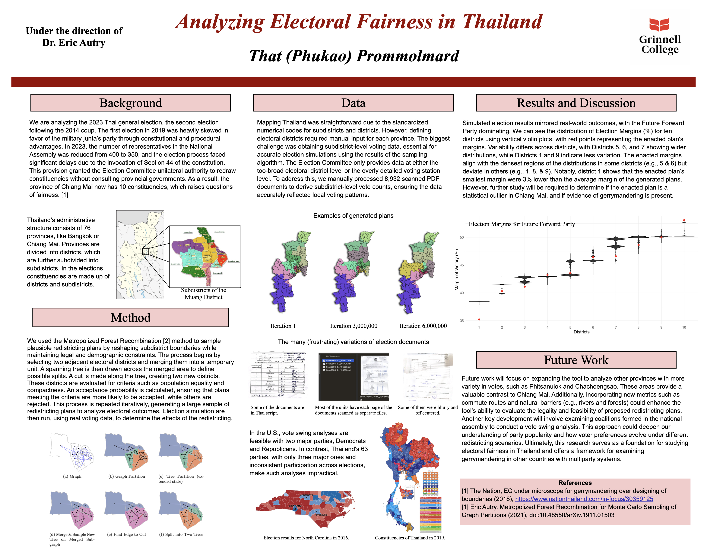

Analyzing Electoral Fairness in Thailand
In this project, I examined the fairness of electoral redistricting in Thailand’s 2023 general election. After a military coup in 2014, the proportion of seats in the house of representatives changed. In 2023, the number of lower house representatives lowered from 400 to 350. A controversial provision allowed the Election Commission to redraw district boundaries unilaterally. Some suspects this could have the same effect as gerrymandering, so I decided to rethink gerrymandering analysis to apply to Thailand. Under the guidance of Dr. Eric Autry, I used the Metropolized Forest Recombination algorithm to generate millions of valid redistricting plans and simulate election outcomes. These simulations allowed me to evaluate whether the enacted district plan was an outlier and potentially unfair.
To support this analysis, I spent months manually processing over 8,900 scanned PDFs to extract subdistrict-level election results. Thailand’s Election Commission does not publish voting data at a consistent or usable level of detail, so I had to derive the necessary datasets by parsing and cleaning raw scans. Many of the documents were blurry, poorly formatted, or incomplete. Despite all this, I was able to align geographic boundaries with real voting behavior, which is essential for evaluating how redistricting affects electoral outcomes. I then ran simulations that analyzed district compactness, population balance, and partisan bias across the generated plans.
I learned that a reproducible framework for examining fairness in multi-party systems could work for countries with a voting system that allows for more than 2 parties. I presented my findings at the 2025 Joint Mathematics Meetings and am working to expand the tool to other provinces with higher voting variation and potentially other countries. I hope that this work can help policymakers, advocates, and the public make sense of complex redistricting systems and hold authorities accountable when fairness is compromised.
Below is the poster I made for JMM 2025. Feel free to read them!
